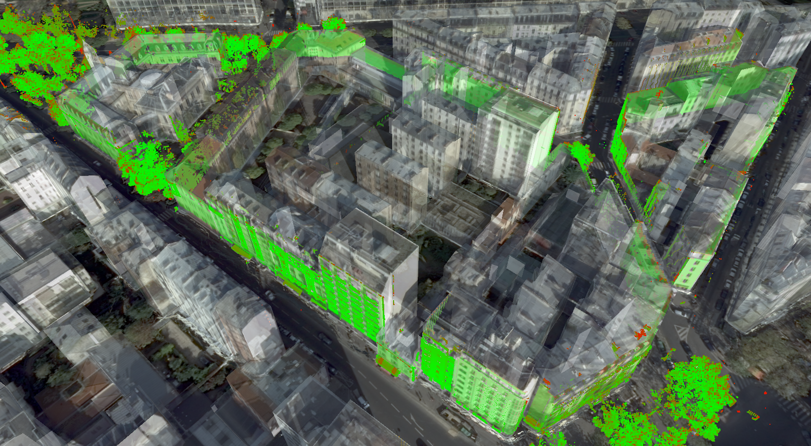
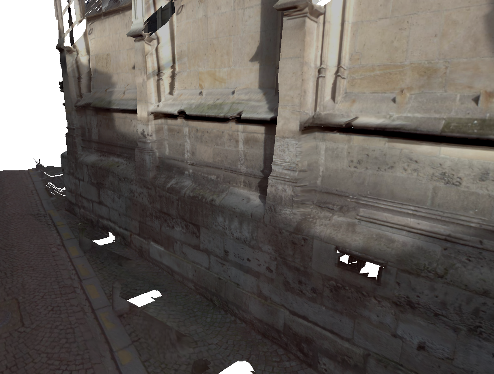
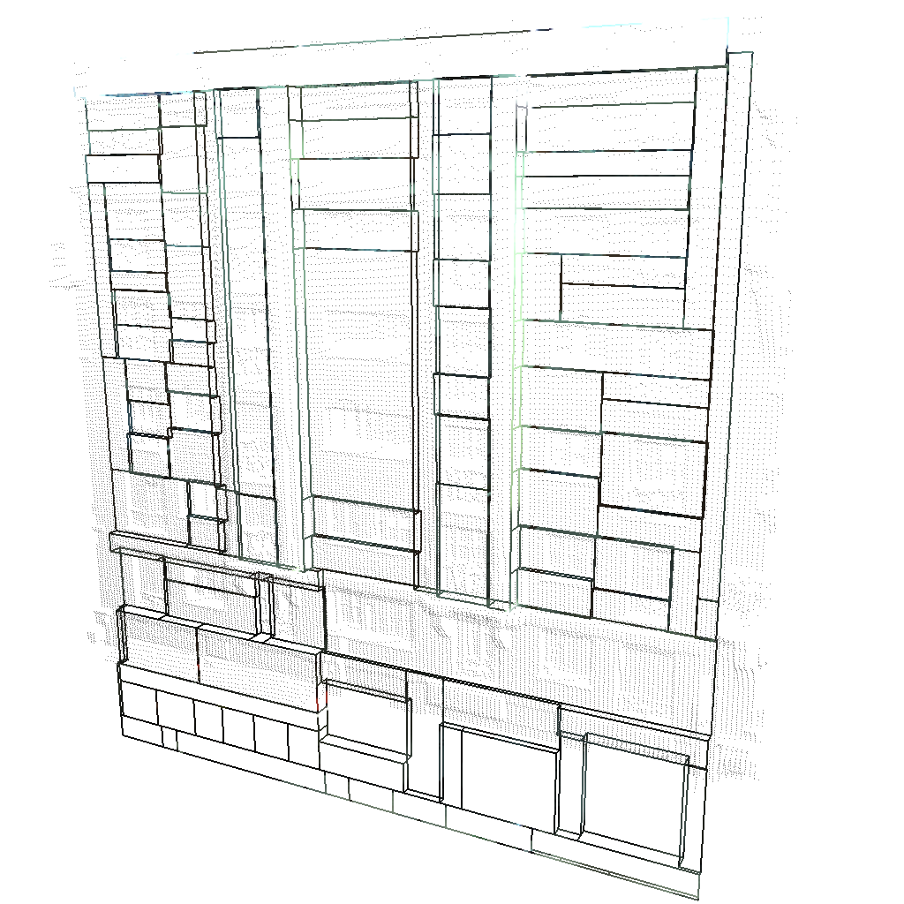
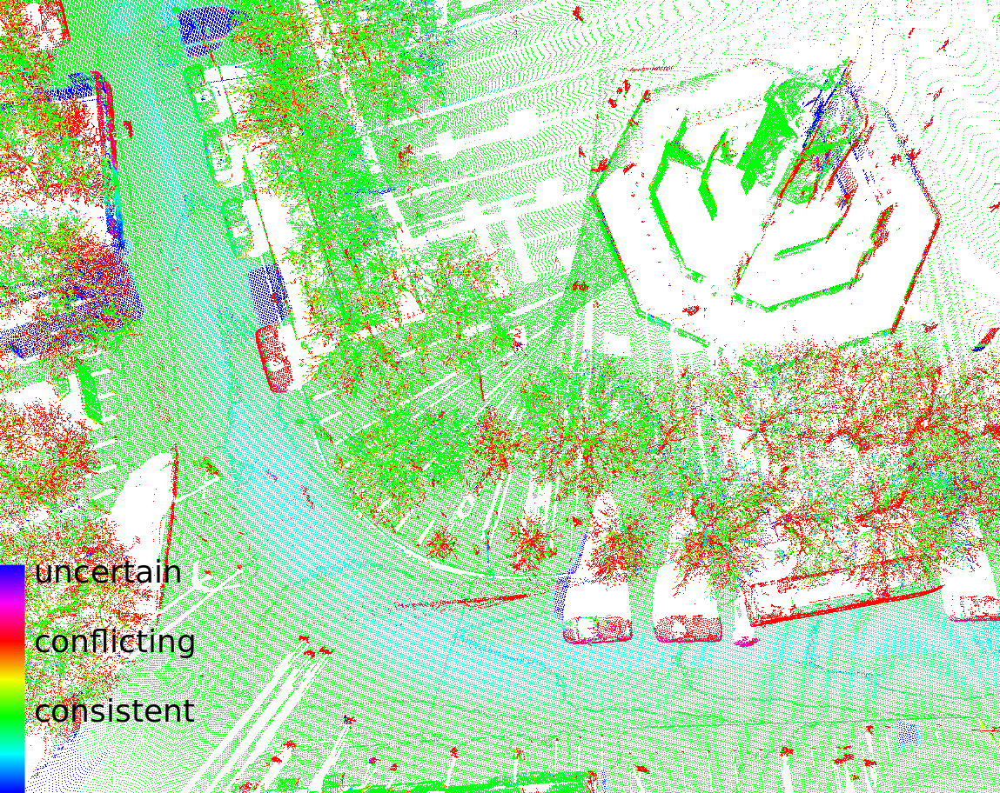
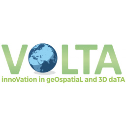

Bruno Vallet
73 avenue de Paris · 94165 Saint-Mandé CEDEX · (+33)1 43 98 80 81 ·
bruno.vallet@ign.fr
Senior researcher in Geographic information science, Computer Vision, Teledetection, Lasergrammetry, and 3D City Modeling.
Head of the ACTE research team
Chargé de recherche HDR à l'IGN en sciences de l'information géographique, vision par ordinateur, télédétection, Lasergrammétrie et reconstruction 3D de ville.
Responsable de l'équipe ACTE
Research Interests
Sujets de recherche

Surface reconstruction and texturing
Reconstruction et texturation de surface

Structured reconstruction
Reconstruction structurée

Analysis of 3D data: object detection, semantisation and change detection
Analyse de données 3D: détection d'objets, sémantisation et détection de changements
News

17/01/20: BIOM meeting
Annual meeting of the ANR BIOM project

13-16/01/20: TRB 2020
Participation at and speech on "Creating digital twins of cities: from data acquisition to 3D modeling" at the http://www.trb.org/AnnualMeeting/AnnualMeeting.aspx

08/12/19: Miloud Mezian's PhD
My PhD student Miloud Mezian defends his PhD thesis
Experience
Head of ACTE research team of the LASTIG lab
LASTIG, IGN France
Coordination of a team of 30+ researchers and research engineers on remote sensing data acquisition and processing
January 2019 - Present
Senior researcher, head of GEOM4D research team of the MATIS lab
LASTIG, IGN France
Coordination of a team of 6-8 researchers and research engineers on registration, analysis and reconstruction from images and Lidar data
September 2015 - December 2018
Junior researcher, head of ARECOS research team of the MATIS lab
MATIS, IGN France
Coordination of a team of 6-8 researchers and research engineers on analysis and reconstruction of urban areas from images and Lidar data
September 2011 - August 2015
Junior Researcher
MATIS, IGN France
Leading research on building reconstruction and texuturing of 3D city models
September 2008 - August 2011
PhD student
ALICE team, INRIA Nancy
PhD on function bases on manifolds (Geometry Processing)
September 2005 - July 2008
Experience
Past jobs and roles in research
-
01-09-2005
PhD student
My PhD, obtained in July 2008, was supervised by Bruno Levy and dealt with function bases on manifolds.
-
01-09-2008
Junior researcher
After my PhD, I start working at IGN France as a permanent researcher.
-
01-09-2011
Senior researcher and head of ARECOS research team at MATIS lab, IGN
I took the responsibility of a small research team (6-8 people).
-
01-09-2015
Head of GEOM4D research team
I take the head of a new team working on 4D data processing
-
12-2016
Habilitation defense
Defense of my habilitation (HDR) in GI science, which allows in France to be the main supervisor of PhD students.
-
01-09-2018
Head of ACTE research team
I become the coordinator the ACTE research team of the new LASTIG lab.
Education
Université Paris-Est
Habilitation (HDR)
Geographical Information Science
December 2016
Institut National Polytechnique de Lorraine
PhD in Computer Science (geometry processing)
September 2005 - July 2008
Telecom ParisTech
Engineering school
Computer Science (computer vision, image processing, artificial intelligence)
September 2003 - May 2005
Université Pierrre et Marie Curie.
DEA IARFA (Intelligence Artificielle, Reconnaissance des Formes et Applications)
Artificial Intelligence and shape recognition
September 2003 - May 2004
Ecole polytechnique
Generalist engineering school
Specialization in mechanics and computer science
September 2000 - May 2003
Publications
[ACL] Journals
[ACLN] Journals
[ASCL] Others
[ACTI] Conferences
[ACTN] Conferences
[COM] Conferences
[OS] Books and Chapters
[DO] Books and Chapters
[AFF] Posters
[AP] Preprints
[TH] Dissertations
[INV] Invited Talks
[PV] Popularization
Invited Talks
Projects
On-going and past research projects
Platinum
Long term 3D cartography for localization
BIOM
Building Inside/Outside Modeling
TimeMachine
Big Data of the Past

Volta
innoVation in geOspatiaL and 3D daTA
Other research activities
Teaching
Other research activities
Supervisions
- Jérôme Demantké (Université Paris Est-MSTIC PhD, 2014), co-supervised with Nicolas Paparoditis (MATIS, IGN): Photorealistic 3D models façade models reconstruction from terrestrial images and Lidar
- Fabrice Monnier (Université Paris Est-MSTIC PhD, 2014), co-supervised with Bahman Soheilian and Nicolas Paparoditis (MATIS, IGN): Automatic registration of mobile mapping point clouds to 3D city models
- Wen Xiao (Université Paris Est-MSTIC PhD, 2015), co-supervised with Nicolas Paparoditis (MATIS, IGN): Change detection from mobile laser scanning point clouds
- Miloud Mezian (Université Paris Est-MSTIC PhD, 2019), co-supervised with Bahman Soheilian and Nicolas Paparoditis (MATIS, IGN): Trajectography registration by combined data-model deformation for geometric enriching of existing city models
- Mohamed Boussaha (Université Paris Est-MSTIC PhD since 2016), co-supervised with Loïc Landrieu (STRUDEL, LASTIG, IGN): Hybrid urban scene analysis from mobile mapping images and laser scan
- Stéphane Guinard (Université Paris Est-MSTIC PhD since 2017), co-supervised with Loïc Landrieu (STRUDEL, LASTIG, IGN): Simplicial complexes reconstruction
- Raphael Sulzer (Université Paris Est-MSTIC PhD since 2018), co-supervised with Renaud Marlet (Imagine, LIGM, École des Ponts ParisTech), Sven Oesau (CSTB) and Loïc Landrieu (STRUDEL, LASTIG, IGN): Structured 3D city reconstruction from heterogeneous data
- Rahima Djahel (Université Paris Est-MSTIC PhD since 2018), co-supervised with Pascal Monasse (Imagine, LIGM, École des Ponts ParisTech): Hybrid data registration